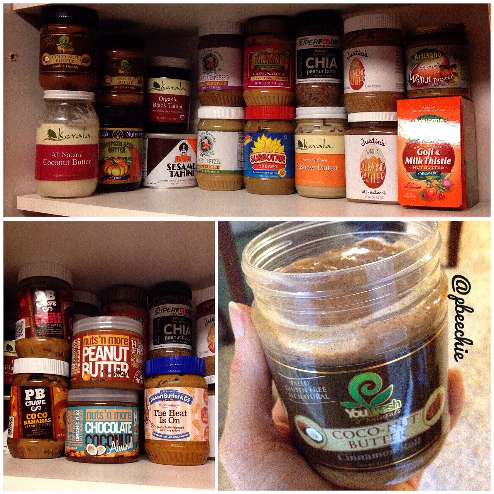
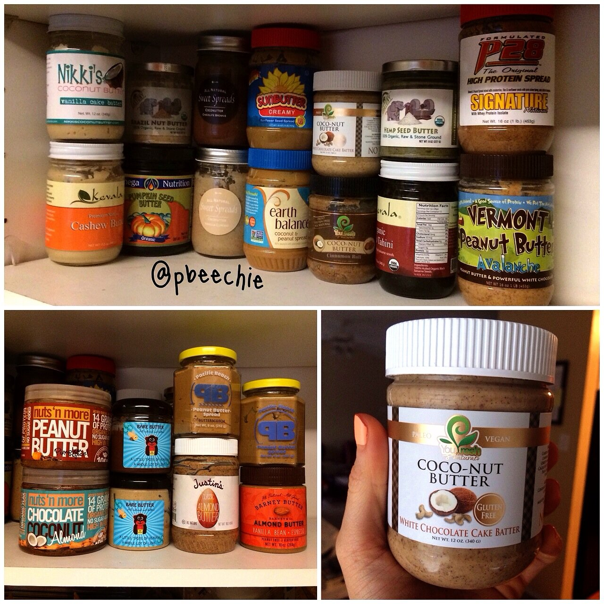
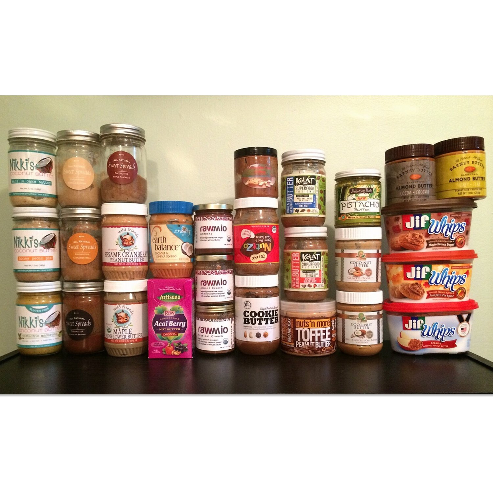

Nut Butter Reviews (over 200!)
Soooo...... I've had a lot of nut butters in my dayy ;) I'm a bit of a hoarder when it comes to different flavors of things. I have this weird habit where I really like to try just a bit of every flavor possible, so my collection has built up. This applies to spices, mustards, salsas... and more. It's pretty bad XD because. I also have a habit of NOT using something when it's nearly gone. As if I could never buy more -_-. So I end up with a ton of a little of everything hahaha. So awful.
Anyways, I decided to keep a running list of all of the nut butters I have/had, as well as my opinion on them!! This may help you decide whether or not to purchase one you're interested in.
Anything in red and striked out is discontinued (as of last update: 03/20/2019). Anything in green is vegan! A lot of protein-fortified kinds I tried in the past have whey, but some of the vegan kinds are fortified with rice protein!



Current StashBasse - Salted Caramel Cashew Butter: This nut butter is very creamy and has a thick, sweet flavor to it. Sometimes, though, I get bothered by the natural salted caramel flavor used to make this. Instead of using dairy to get the caramel flavor, they used "natural salted caramel flavor" and it has a pretty strong smell. Some may find this off-putting but some may find it delicious - my personal opinion on it changes daily. I will probably finish the jar just fine but not repurchase it since the flavor can be overwhelming.The Peanut Principle - Cereously Good (peanut butter with cocoa puffed rice): Another flavor for the dark chocolate lover. The base is very similar to the dark chocolate base of the smores flavor, but no marshmallow here. It's a thick, delicious dark chocolate base with little chocolate cereal puffs that adds for a fun texture without being straight up crunchy. I am not a crunchy fan but I enjoy these tiny puffs!The Peanut Principle - Cereously Good (peanut butter with maple toast crisps): I don't get much maple flavor out of this. I personally don't like this flavor too much. To me, it's just normal peanut butter with maple toast crunchy crisps in the way. The pieces are too big and crunchy and don't pair well with the peanut butter or add any unique flavor to it. I wouldn't get this one again.The Peanut Principle - Cereously Good (peanut butter with strawberry filled frosted puffs):I don't know what type of cereal they use, but it's almost like small, strawberry poptart puffs. This is delicious! The strawberry flavor is prevalent and mildly artificial tasting, but in a pleasant way instead of an overwhelming flavor. I'm addicted to hunting for and scooping out the little cereal puffs!The Peanut Principle - Coco-Nutter Butter (coconut peanut butter):
A standard, naturally flavored coconut peanut butter. They use toasted sweetened coconut so that makes for a really sweet peanut butter with a rich flavor that I love. No fake coconut taste here! The only thing I don't like about this flavor is it's pretty runny, which is abnormal for the brand. If it was thicker instead of runny it would be perfect. This is better for oatmeal than something like toast since it is runny.The Peanut Principle - Dashing Thru the Dough (chocolate chip cookie dough peanut butter): This is my favorite out of all of the peanut principle ones I bought. I think there may be a bit too many chocolate chips, but the base flavor is incredible and sweet. I can't get sick of it!The Peanut Principle - I Want Smore (s'mores peanut butter):
For the chocolate lover! It's a dark chocolate peanut butter based with marshmallow swirls intermingled. I really love this. Although, I don't know where the graham aspect is, but you don't even miss it as you eat it. Very rich!The Peanut Principle - My Maine Squeeze (white chocolate blueberry almond butter): This is another winner from the peanut principle. It is very sweet as a base and then has the slight blueberry after taste to it. So creamy and yum.The Peanut Principle - Take Me Out To The Ballgame (caramelized popcorn peanut butter): This one is a hard pass for me. Just tastes like peanut butter with lumps of popcorn in the way.The Peanut Principle - Tough Cookie (cookies & cream peanut butter):
I love this so so much. This and the cookie dough peanut butter are my favorite flavors from this brand. So sweet and the cookie pieces are ground up enough where it's not overly crunchy - just a nice sweet cookie crumble.Youfreshnaturals - Fruity Cereal Crunch Freshy Frost:
This is more of a frosting than a nut butter so I hesitate to put it here, but youfreshnaturals has historically always done nut butters so I am. This is so interesting! This is their first vegan product in many years so I was ecstatic. It's so sweet that I don't enjoy putting this on fruit like usual. But it is great on toast or oatmeal! There are bits of fruity pebble-like cereal within that's perfectly balanced sweet without being too overwhelming. I don't think I would buy this again but it was nice to try.Previous Stash5150 Nut Butter - Chocolate Biscuit:
Review here5150 Nut Butter - Chocolate Chip Cookie:
Review here5150 Nut Butter - Cookies and Cream:
Review here5150 Nut Butter - Health Nut:
Review here88 Acres - Chocolate Sunflower Seed Butter: I love sunflower seed butter, so I'm a fan of this. But the chocolate flavor isn't as strong as I'd think. Somehow the sunflower seed taste and the chocolate taste end up negating each other and the overall taste is dulled. The texture is just as creamy as the vanilla one though so I love that.88 Acres - Maple Roasted Sunflower Seed Butter:
This is so sweet and fantastic! I have had other brands of maple sunflower butter, but they had a weird aftertaste… This has no aftertaste and is just sweet! I think people who have never had sunflower butter may find it weird and different, but you adjust after a serving or two of it! And then it’s great.88 Acres - Pumpkin Seed Butter: It's a standard pumpkin seed butter, but lightly sweetened and enhanced in a good way. Probably my second favorite from this brand! You have to adjust to the taste of pumpkin seed butter if you've never had it before, but then you get hooked!!88 Acres - Vanilla Spice Sunflower Seed Butter: If you have to get just one of this brand's nut butters, get this one!!! The flavors are so magical, and it's delightful. If you've had the wild friends brand sunflower seed butter, this is most similar (as opposed to sunbutter), except I like this better because the texture is more thick and creamy and doesn't leave a weird aftertaste.
Ohh this is a unique one. It will completely coat the inside of your mouth (more than peanut butter) so be warned! At first, I didn't enjoy the underlying raw legume flavor, but it actually grew on me. I often mix this one with a sweeter nut butter such as coconut butter or almond butter to cut the earthy-ness and the mouth coating feel.Archer Farms - Roasted Cashew Butter:
I tried this before I had raw cashew butter and it's really good as well, but after trying raw, I can't go back to roasted! Regardless, this is delicious.
Yeah... raw cashew butter is amazing O_O I prefer the Kevala brand though because it's creamier.Artisana - Raw Almond Butter:
Meh. This was too gritty and not creamy at all - I had trouble finishing the jar...Artisana - Raw Pecan Butter:
Also meh. I wouldn't buy this again.Artisana - Raw Macadamia Butter:
Really creamy! I found it hard to pair with foods though.. Took me a while to get through but it's tasty.Artisana - Raw Walnut Butter: I never actually finished this jar because I don't realy care for it. I got about 2/3 through and it got too old and went bad... I also don't really care for walnuts TOO much so... that makes sense. It literally just tastes like raw walnuts. D'oh.
Again, this brand is amazingly creamy. This flavor has bits of flax seeds in it, but not too many to where it's gritty. I like it! The flavor's nothing too crazy, but perfectly sweet.Barney Butter - Vanilla Bean & Espresso:
This. is. amazing. I thought I'd like it but not THIS much. This is my first time trying this brand and it's SO perfectly creamy. It's a base of almond butter, but it's not gritty like some almond butter is. It's extremely smooth. It's creamier than the Wild Friends Vanilla Espresso Almond Butter, and less nutty, so the vanilla espresso flavor is more noticable. Love it.Base Culture - Gingerbread Almond Butter: The texture of this is pretty rough instead of smooth/creamy. If you like crunchy nut butters, this is for you! I like the unpredictable texture of this and the flavor is subtle without being too overwhelming. I like the balance of this nut butter a lot and would definitely purchase more of their almond butters.Better'n Peanut Butter - Original: This brand makes lower fat and half the calorie "peanut butter". The problem is it doesn't REALLY taste like peanut butter if that's what you're wanting. It's a little different BUT I absolutely love it!! It's super creamy and the taste grows on you. Especially appealing since it's half the calories haha. I also found that this nut butter, since it's not natural and has added ingredients, molds.... If you don't eat it quickly enough the jar gets wasted. That's why I stopped buying it as much.Better'n Peanut Butter - Banana:
Call me crazy but I really like this brand of lower calorie peanut butter. Like the other two flavors from this brand, I wouldn't really say it tastes like peanut butter at all... But I love it! I adore the texture. I was scared this one would taste too artificial since banana flavor is hard to nail but I love thissss.Better'n Peanut Butter - Chocolate: Same review as the original flavor. I actually prefered the chocolate flavor over original which is weird since I don't generally like chocolate nut butters.Better'n Peanut Butter - Chocolate Coconut:
This is nothing like normal peanut butter, but for some reason the craving/taste for it hits me. It's a low fat option, at 50 calories a tablespoon. This is good but not really a chocolate coconut flavor. For some reason sometimes it reminds me of a PB&J flavor? Idk but it's good hahah. Keep this in the fridge or else it will mold.Beyond the Equator - Creamy 5 Seed Butter: This is a little iffy for me depending on the day. This seed butter has a chemical taste to it after changing their formula that really lingers if you're not careful. I do have days that it doesn't bother me, if I don't use too much. I do like that this is completely nut free and all seeds for some good omega-3s.Blind Spot Nut Butters - Sea Salt Caramel Peanut Butter: I was so pleasantly surprised to see that this flavor is vegan!! The flavor is mostly peanut butter and not much of the caramel flavor there (disappointing a tad), but overall the flavor is lovely so no complaints.Blind Spot Nut Butters - Shortbread Cookie Nut Butter: loooove how this tastes. I found that all of their nut butters are nice and creamy rather than needing to spread them a lot - I like that. Very sweet and yummy since it's walnut & CASHEW based (the best). One thing I noticed is this went "bad" pretty fast and had a weird smell after just a few months.Blind Spot Nut Butters - Super Squirrely Nut Butter: Love the nuts and fruit in here! Adds a subtle "squirrely" taste to it like a trail mix. Unique.Buff Bake - Chocolate Chip Peanut Butter:
The chocolate flavor is kind of mild, but it's there! It's very creamy but there's also things like chia seeds, hemp seeds, and flax seeds you find ground up inside. It's not crunchy but every now and again you'll get a grit. Probably my least fave of Buff Bake's five flavors, but it's good! It doesn't bake well though because the flavor goes weird, so eat it as is!Buff Bake - Cinnamon Raisin Peanut Butter:
I don't get the full cinnamon raisin flavor from this... It's kind of a dull flavor but it's still so delicious. So creamy and has a light sweetness to it.Buff Bake - Coconut Cranberry Peanut Butter:
I love this!! Like their other flavors, it's so smooth and creamy. I tried the Wild Friends brand of sesame cranberry peanut butter and didn't like it because the sesame and cranberries aren't chopped up, they are whole. But in this peanut butter, the cranberries are all blended in so you can see the bits of flavor evenly throughout the nut butter. I love it.Buff Bake - Cookie Almond Butter:
It's just like Manbake's cookie butter but has a chocolate twist to it because it has cocoa powder added! The chocolate flavor is mild, but just enough to make it slightly different! Neither of the brands taste like the Trader Joe's Speculoos Cookie Butter; I don't like the trader joe's one much but I love these. I prefer the manbake brand of the cookie butter though because the flavor is better, stronger, and it's lower calorie and higher in protein.Buff Bake - Snickerdoodle Almond Butter:
It surprisingly tastes JUST like a snickerdoodle cookie! Sweet and slightly cinnamony. I first tried this flavor when it was brand new and I hated it. The texture was beyond gritty and unspreadable. But I tried it again after they got new packaging and it is AMAZING. It is sooo so so creamy (as are all of their flavors) and does not even separate between chunky/oil. It's perfect. This is now my favorite of their five flavors. I'm not sure that I'd recommend getting all of this brand's flavors, but coconut cranberry and snickerdoodle are real good.Cocovie Naturals - Vanilla Coconut Spread:
This is good, but not what I expected. It's a subtleee sweet taste with undertones of chocolate, and a texture mostly comparable to coconut butter. I wouldn't use this in most places you use normal nut butters, but as a general spread on toast it's great.Cracked Nut Butter - Brownie Batter:
This is a great paleo & gluten free brand! I think brownie batter is my second favorite flavor they have. It's sweet and creamy and just great. I rarely even like chocolate nut butters, so that's saying a lot!!Cracked Nut Butter - Caramel Pumpkin Pie:
Mmmm, can't go wrong!! It's not too strong, not too subtle!! I don't get the "caramel" aspect but the pumpkin, yes! I like the creaminess of this (drips nicely instead of needing to spread).Cracked Nut Butter - Chocolate Chip Cookie Dough: This is the same flavor and texture as the cookie dough flavor, just with chocolate chips in it haha. I find them to just be annoying since I can't spread them while I spread the creamy part, but that's just me.Cracked Nut Butter - Cinnamon Roll:
It's yummmmm. I'm kind of iffy about this flavor on some days though. There's a strange after-taste or strong taste to it or something. I like it but just not always in the mood for it because it's a little artificial tasting.Cracked Nut Butter - Cookie Dough:
Probably my fave of all of their flavors!! Surprisingly sweeter than I expected this brand to be! It's like a sugar cookie.Cracked Nut Butter - White Chocolate Raspberry:
I got this in one of their to-go squeezable pouches! I thought it was such a good idea...until it didn't squeeze out. I was really disappointed that it was too thick to work. So I just cut open the corner and ate it out of there. It's delicioussss though!! It tastes JUST like the white chocolate raspberry quest bar - which is a very very good thing.Crazy Richard's - Natural Almond Butter: SO MUCH YES. I don't know how they get it so creamy and flavorful too. I like this it's so pure with no hydrogenated oils, sugar, blah blah blah.Crazy Richard's - Natural Cashew Butter: I'm a fan. All I can say. If you want creamy, this is for you. Tastes like just pure cashews.Crazy Richard's - Natural Creamy Peanut Butter: Very creamy, so that's lovely!Crazy Richard's - Natural Crunchy Peanut Butter: I always hated crunchy pb but this is like... creamy pb with random bits and it's a GOOD thing. Mostly a creamy pb. Not just chunky grossness.Dastony - Brazil Nut Butter: It's extremely creamy/runny but has a bit of bitterness to it as an after taste... I wouldn't purchase this again. The only way I really like it is if I mix it with some yogurt and stevia. Then it's good :)Dastony - Raw Hemp Seed Butter: I'm not sure what I think about this one.. It reminds me of pickles/relish for some reason. It's not bad, just very different. I'd group it with my other "savory" nut butters, which are pumpkin seed butter and tahini. While I'm it sure it could be used in a sweet dish somehow, it's BEST with things like chicken, fish, vegetables, etc.Dastony - Sprouted Sunflower Seed Butter: This is the third jar of Dastony nut butter I've tried and...I've kinda disliked all of them.... Sunflower seed butter is one of my favorite nut butters, so I figured I'd like this (thinking sprouted can't be THAT different...). Well it is different. The flavor is growing on me but it's not like what I expect from sunflower seed butter. The flavor reminds me of the hemp seed butter that I got and hated. Bah... And it's so creamy to the point where it just coats your mouth with the spread and lingers. Even weirder is when it's heated, the flavor reminds me of nacho doritos?... I don't even know ahaha. It's crazy. Just beware.Don't Go Nuts - Simply Cinnamon Roasted Soybean Spread:
This is interesting! I enjoy it. The cinnamon flavor is so subtle and would maybe even go unnoticed if not indicated in the label, but it's so perfectly there once you realize it. This is initially a nut butter hard to stir and thicker in consistency, but ends up spreading great once you stir the oil throughout.D's Naturals - Cocoa Glazed Cinnamon Roll Fluffbutter: Mehh this is my least favorite of all the fluffbutters. The chocolate flavor is dull, and the cinnamon flavor is almost too zesty? I just don't think these flavors go well together; I don't recommend. But the texture is spot on like the rest of the fluffbutters!D's Naturals - Creamy Chocolate S'mores Fluffbutter: Okay so you know the chocolate hazelnut pirouette cookies made by Pepperidge farm? This tastes...exactly like...THOSE. I am in love. I was afraid this would be too chocolatey for me since I'm not a huge fan of chocolate peanut butters, but this is very nice and balanced! Also they do NOT lie with the name "FLUFF"butter; it's like an icing!!D's Naturals - Gooey Bananas Foster Fluffbutter: Definitely has an artificial banana taste, but it's not too strong like I have tasted in some nut butters like PB Crave! I really like this, but I'm not in the banana flavor mood often.D's Naturals - Salted Caramel Sundae Fluffbutter: Pretty basic in flavor, but I like it! It's a go to since it doesn't have one strong flavor one way or the others. Sweet and yum, but nothing crazy.D's Naturals - Tuscan Tiramisu Fluffbutter: They do NOT lie with the name "FLUFF"butter; it's like an icing! So unique and awesome. This has added rice protein so it's boosted protein but also vegan! The flavor isn't too strong and mostly just tastes like regular peanut butter to me, but the awesome texture of it makes up for it.D's Naturals - White Mocha Mousse Fluffbutter: This may sound crazy, but this tastes like...buttered popcorn jellybeans to me??? The smell is mocha, but I ALWAYS taste fake butter flavor. I really like it though lolol. It's not bad at all, just NOT mocha. Or white chocolate.Earth Balance - Cran Seed Crunch (Trail Mix Blend):
Think classic peanut butter but with dried cranberries and pumpkin seeds within. There's nothing special about this and to be honest, the mix-ins are just too big and annoying.Earth Balance - Creamy Coconut Peanut Butter: This is a staple jar for me!! I've gone through 3-4 jars and continue to purchase more. Very creamy and the taste is insane. One of my top five nut butters.Earth Balance - Choco Pretzel Crunch (Trail Mix Blend):
This is a dark chocolate peanut butter with bits of pretzels and raisins throughout. I like the balance of the smooth peanut butter with the crunchy pretzels a lot. The mix-ins aren't too overwhelming.
This is awesome, but mostly for the gimmick! At it's core, the flavor is a peanut cashew butter. I love cashew butters and this texture is great. The only real difference with this flavor is the 'pop rocks' added inside to make the little fireworks. But half of mine are "duds" and don't really pop. So don't get too excited about this.Jarrow Formulas - Pumpkin Seed Butter: Okay so the color of this is green and apalling. When I first got it... I thought... great, I'll never use this. Money wasted. But I SOON ended up addicted!! I have a tablespoon nearly every other day - it is PERFECT on delicata squash or sweet dumpling squash!!Jem Raw - Cinnamon Red Maca Almond Butter:
My favorite of the Jem Raw nut butters for sure! The cinnamon flavor is just subtle enough to add a nice flavor, and the maca adds a unique 'zing' to the flavor. I love this! And alllll of this brand's flavors are soooo creamy and sweet it's amazing.Jem Raw - Coconut Cardamom Almond Butter: My least favorite of the Jem Raw nut butters. It's just that the cardamom flavor is much stronger than I expected. It's the least 'sweet' of them since the cardamom flavor is most dominant. At first the flavor was very overwhelming for me but I ended up really liking this one since it has a sweetness as well as the fact that it's sooo creamy. I love creamy nut butters. This is nearly runny actually.Jem Raw - Maqui Camu Super Berry Butter: This one is amazing as well!! It reminds me of the Rawtella I had. Which, if you remember, I finished in about 2 weeks. Which is extremely fast considering how many jars I have to choose from.. For some reason it reminds me of a slight chocolate-y taste with juuuust a hint of berry. It's very unique and sweet and creamy ahhh. Alllll of this brand's flavors are soooo creamy and sweet it's amazing.Jif - Natural Creamy Peanut Butter: I don't think this is too different from normal Jif...it's very smooth and has an "unnatural" texture that Jif is known for. I believe the only difference from normal Jif is that there is reduced sodium and instead of hydrogenated vegetable oils, it uses palm oil.Jif - Whips, Creamy Whipped Peanut Butter:
I've always repeated that peanut-based nut butter is my least favorite nut butter. I never cared for peanut butter itself and will pass it up for any other option. But this whipped peanut butter is GREATTT. I'm addicted to it. It's lower in calorie than regular peanut butter since it's air-y. I loooove the texture. Reminds me of dense whipped cream. Perfect.
Deeeelicious. I will be buying more once I finish off my black tahini. It's more savory and earthy than typical nut butters. Great with savory meals like tempeh or tofu but also good with bananas and oatmeal.Justin's - Almond Butter: Super creamy; nice, standard almond butter. No disappointments.Justin's - Maple Almond Butter:
Super creamy and nice like the others. Standard almond butter. I like this a lot for a medium sweetness rather than just plain almond butter! Perfect to me.Justin's - Maple Cashew Butter:
This is soooo perfect. It is so SMOOTH, creamy, and lightly sweet. I love the light addition of sweet and salty without it being too overwhelming. Love love.Justin's - Vanilla Almond Butter:
This will make you weak to your knees!!! SO SO SO GOOD. It's very sweet and sooo creamy. Extremely addictive.Kevala - Black Tahini: Slightly stronger than regular tahini, which is fine by me since I love tahini! If you've never had tahini though and/or don't like it, black tahini wouldn't be any better. I love how kickbutt the black color makes food look hah.Kevala - Coconut Butter:
Incredible if you love coconut!! It's the only brand of coconut butter I've had so I don't know how it compares to others. Perfect on baked oatmeal or sweet potatoes, holy crap.Kevala - Natural Cashew Butter:
This is SO CREAMY and probably my favorite nut butter, it's a close call. Raw cashew butter has a smoothness like no other nut butter. It's dangerous if I don't have my measuring utensil out...KALOT Superfood Fusions - Blueberry Cinnamon Walnut Almond Butter:
I was hesitant to try this flavor because I wasn't a fan of normal walnut butter. Walnuts are iffy for me... But I heard great things about it so I tried it and I'm so glad I did. It's REALLY creamy (creamier than their cherry flavor) and the cinnamon flavor is outstanding. Bits of sweetness from the fruit make it addictive.KALOT Superfood - Cashew Butter with Blueberries Vanilla and Chia Seeds: I dunno...I thought I'd love this but I'm not a fan... It's got a strange bitter aftertaste and it isn't creamy. It's thick and definitely needs spreading. I wouldn't recommend this.KALOT Superfood Fusions - Cherry Vanilla Almond Butter:
Basically tastes like how it sounds. The vanilla isn't very strong, but it's like a sweet almond butter with bits of dried cherries inside. It's not overly creamy or overly thick, just moderate to where it spreads well. :) I really really like it! Nothing too special, but also doesn't suck. I will be trying their other flavors for sure.KALOT Superfood Fusions - Espresso Hazelnut Almond Butter:
Texture is the same as their other flavors! Perfectly creamy. The flavor reminds me of Barney Butter's vanilla bean + espresso. But more almond butter flavor based. I love it, although the Wild Friends Vanilla Espresso will always be the best espresso nut butter in my book. The flavor goes a little weird if you bake with it, so eat it as is or melted.Kween - Granola Butter: Another iffy one for me. Sometimes its sweet and pleasant but other times it's just a little too gritty and coats my mouth in all the wrong ways. It also has way too much oil that always settles on the top - it would be much more pleasant with less oil and a thicker consistency.Laurel's Butter - Banana Bread Peanut Butter: Have you had the banana flavor of PB Crave brand? It has that artificial banana "lip gloss" flavor that that brand has. It's not as overwhelming, though, so that's good. But if you don't like that, it's not for you. I like it though heh. And the bits of walnuts!!Laurel's Butter - Coconut Cashew Butter:
Perfectly creamy! The only thing I don't like is they used roasted cashews rather than raw, so it has a very roasted flavor. But that's okay! Salty and yum.
It's not super frosting-y but it's sweet and delicious! It's kind of like a half creamy half crunchy PB texture and super thinned out rather than thick. I like it but sometimes too runny. For all of the lion's choice nut butters, I've actually poured out a lot of the oil on the top because it was SO runny. Once doing this, the consistency was much better.The Lion's Choice - French Toast Protein SuperFood Peanut Butter:
Yummy cinnamon flavor! Nothing crazy, very good. Again, sometimes too runny for me (oil leaked out all over during the shipping process) but overall good.The Lion's Choice - Red Velvet Cake Protein SuperFood Peanut Butter: I wouldn't call this red velvet.. the flavor is a little bit lacking. It's kind of bland actually. But I can't say no to nut butter! It's sweet so I'm happy, I just can't place the taste. Kinda like...slight chocolate except not?The Lion's Choice - Toasted Marshmallow SuperFood Peanut Butter:
This is my faaavorite I've had from them!! The flavor is so unique! I get marshmallow vibes from the flavor - there's no actual marshmallow though just fyi.Manbake - Cookie Butter: It tastes extremely similar to the one by Buff Bake. Eerily similar... They have similar ingredients too. But the Manbake brand is muuuch creamier and I like it better! I like that this is protein-based and lower in calorie than normal nut butters.Manna Organics – Coconut Cashew Butter: I loooove this!! There are little bits of coconut flakes so if you don’t like texture you won’t like it. But to me it’s not too much. The flavor is soo sweet from the coconut and creamy from the cashews.MaraNatha - Coconut Almond Butter: This is verrrry creamy, exactly the way I love it! It spreads out if you palce it on top of something. The coconut flavor isn't overwhelming; it mostly tastes like an almond butter. I adore it. It tastes just like the Youfreshnaturals brand of Roasted & Toasted CocoNut Butter.MaraNatha - Sunflower Seed Butter:
One of my favorite nut butters, but now I purchase the SunButter brand because it's easier for me to get a hold of. I actually prefer this brand though because it tastes lighter.MaraNatha - Roasted Almond Butter:
Sooo delicious. I prefer it over raw almond butter - the roasted flavor takes it up a notch!! I also prefer it over the Justin's Classic brand.Nakie Foods – Build Your Own (Almond Butter, cocoa butter, coconut sugar, coconut, dried strawberries, vanilla):
I liked it! It could be sweeter, and the strawberry flavor is a little too potent for me. But overall it was a nice unique flavor and thick texture. To me, this brand is hit or miss since every blend is unique/build your own.Nakie Foods – Build Your Own (Cashew Butter, cocoa butter, coconut sugar, dried blueberries, vanilla):
At first, I didn't like this one...the blueberry flavor was too strong. Like their strawberry flavor, it was just too "deep" of a flavor to me. But then after I kept eating it, it really grew on me! The texture is thick and delicious. Could be sweeter though.Nakie Foods – Build Your Own (Mixed Nut Butter, cocoa butter, stevia, dried peaches, cinnamon):
This flavor is so unique, but I like it the most of theirs I tried! Funny enough, this one had stevia instead of sugar yet I thought it was the sweetest and most pleasant. The texture was smoother than the cashew or almond based ones I bought.Naturally More - Chocolate Hazelnut Spread: This is like a healthy nutella! It's so good, and has added flax and probiotics so it makes me feel extra healthy ha. It's nutella minus the gross chemical taste and excessive sweetness. It's very creamy and drippy.Naturally Nutty - Cherry Butter Toffee Peanut Butter:
I am blown away by this brand. The first thing you notice when you open the jar is how CREAMY it is! Not runny, but thick creamy. It's almost like melted caramel. The flavor too is outstanding. I don't get TOO much of a cherry flavor, but the toffee is so prevalent! The flavor reminds me of the pacific beach brand toffee peanut butter, but better. Way better. Also, the pacific beach brand was dry and hard to spread. This naturally nutty brand, however, can do no wrong! So perfect.Naturally Nutty - Cinnamon Vanilla Sunflower Butter: This is heavenly heavenly goodness. I love sunflower butter to begin with; this takes it BEYONDDD the amazingness that is sunflower seed butter. This brand is also VERY creamy. It owns my hearttttt. I need more than just 14 TBSP of this stuff!!!
Like the other two flavors of Nikki's, this is a let down. First off, it is not creamy at all and arrives solid as a rock. It is common for coconut butter to harden at colder temperatures, but even when heated this doesn't seem to soften... It makes it just crumbly and hard to spread. This flavor was probably the creamiest of the three though. Secondly, the flavors are wayyy too subtle. If I didn't know otherwise, I'm not sure I'd even know it was supposed to have a flavor to it. After trying 3 of their flavors now, I've given up with trying to like this brand.Nikki's Coconut Butter - Vanilla Cake Batter Coconut Butter:
This is really delicious but somewhat of a letdown; it kind of just tastes like regular coconut butter... I can't complain since coconut butter is delicious but... I expected to be blown away. Also, it never gets creamy; it stays really firm. And I keep my apartment WARRMM.. So that makes me sad because it should be soft and creamy.
This is not great. I actually had it refunded because it was so misleading. The product is runny and oily. The flavor is okay but it has no substance to it. It's just liquid oil. I don't know if you're supposed to bake with it instead of using it like an almond butter, but you can't spread this on anything. It just makes things wet and oily.Nut Butter Nation - Brown Sugar Cinnamon Peanut Butter: Funny enough, this flavor reminds me of a classic Jif peanut butter from childhood, but with a little cinnamon aftertaste. The brown sugar cinnamon flavor is not strong. And I really enjoy the guilty pleasure of reminiscing on the crappy childhood Jig peanut butter. To make this even more amazing, the consistency is sooooo smooth and drippy.Nutilight - Sugar Free Protein Hazelnut Spread: This is definitely sugar free...if you're expecting a nutella, this won't make you happy. I thought it would be close to nutella. This is super creamy and thick, but the flavor is very hazelnut-y and earthy. Not terrible but I wouldn't purchase again.
This version with protein is MUCH better than the original flavor. The chocolate flavor is duller and the texture is INSANE. It's thicker and that texture is like the toffee one!! Which I LOVE. It's like a caramel texture. Thick, yet creamy and melts in your mouth.Nuts n' More - Original Peanut Butter: Not much to say here! It's peanut butter. It's thick. The texture is very nice & unique though. I love the thickness & sweetness.Nuts n' More - Pumpkin Spice Peanut Butter (+ Protein):
One of my top fives!!! It's so sweet and the flavor is perfect and it's really creamy! Really wish I bought more than one jar.Nuts n' More - Sesame Cranberry Peanut Butter (+ Protein):
Not a fan not a fan not a fan no, but let me explain. I have an extreme aversion to sesame oil. Like. Extreme aversion. I will notice the smallest amount of sesame oil in anything - long story but I spend a lot of my preteen afternoons gargling sesame oil. And now I can't handle it at all. I will notice it in sushi or any Asian dishes, get bummed, and send it back or throw it away. SO anyways. I didn't realize this had sesame oil in it. I figured sesame seeds, but I've never seen a sesame cranberry nut butter with sesame OIL in it. I took 1 lick of this off of the spoon... and got so disappointed when I tasted the sesame oil. I don't think others have an issue with this oil? It's such a subtle taste. But it's there. I'm letting my boyfriend have the jar. It's good and soo creamy and he loves it; I just can't handle that oil.Nuts n' More - Toffee Crunch Peanut Butter (+ Protein):
I cannot HANDLE this deliciousness. I was hesitant to buy this flavor for many reasons. I LOVED their pumpkin spice peanut butter, but disliked their chocolate coconut almond butter... Polar opposites because one was creamy and sweet while the other was gritty and odd. Also, I tried the Pacific Beach brand of toffee peanut butter, and disliked that too. It was dry and just tasted like peanut butter... But I LOVE this. Soo creamy (idk where the "crunch" comes from in the name...) and sweet! When you eat it, it thickens like real toffee!! Definitely a must try nut butter!! Mustmustmustmustt.Nuts n' More - White Chocolate Peanut Butter: It's good and thick! It's not exactly white chocolate, but it's a sweeter peanut butter & lighter in flavor! Not as "white chocolate" as I hoped for, more pb flavor, but it's good.Nutty By Nature (Krush Bars)- Peanut Butter Thick & Creamy: This is the same brand that makes Krush protein bars. It tastes just like the Nuts n' More peanut butter! I love it. Definitely thick and creamy, ha. Sweet and thick and good. Nothing too special though. It's peanut butter.Nutty By Nature (Krush Bars)- Snickerdoodle Cookie Peanut Butter: The flavor on this is the perfect hint of cinnamon! One thing I can't seem to enjoy about this brand is...it's kind of gritty? It's not smoooooth. You can kind of see the grits looking into the jar. The flavor is good but I guess because of the whey protein added in here, it's a little grainy.Nutwhey - Carrot Cake:
Love!! Such a unique flavor of a nut butter!!Nutwhey - Cinnamon Raisin:
It's okayyyy... Nothing really special.Nutwhey - Espresso:
ALSO LOVE. Espresso can be iffy if it's overpowering, but it's just so perfect. Sometimes it's hard to spread but it's yummy.Nutwhey - Smoked Jalepeno:
Very very unique. I don't really crave this often and it's hard for me to think of what to put it on. I mostly just put it straight up on toast for a savory fixin. It's like jalepeno chips! IN NUT BUTTER FORM. Salty & smokey goodness.Nutwhey - White Chocolate Raspberry:
Really good! Tastes just like the Cracked Nut Butter one to me. It's like a white chocolate raspberry quest bar in nut butter form! Yummy.NuttZo - Crunchy Peanut Pro (Organic): Even though this one was organic, the flavor ended up being more strong and earthy. I can't tell because if the components are in more whole pieces (to be crunchy) so you end up with full bits of flaxseeds or if the flavor is because of it being organic. It's not bad, but I prefer the smooth peanut pro a lot more.NuttZo - Smooth Peanut Pro:
Nuttzo has come such a long way! I remember trying this brand many years ago when they were new and really not enjoying their formula. After all these years, they've mastered the formula to produce this luscious, creamy peanut butter. To me, nuttzo is worth the cost for the added nuts + seeds such as brazil nuts and flaxseeds that pack a nutritional punch you wouldn't get with a basic nut butter.NuttZo - Smooth Power Fuel: I prefer this flavor (this one is cashew based) over the peanut-pro flavor. I've always preferred cashews over peanuts for its creamy texture and sweet taste. This one is earthy and certainly a well-rounded complex blend of nuts and seeds that is unlike any other.NuttZo - Chocolate Power Fuel: This one is soo addictive. It takes everything that's so great about the power fuel flavor, but with added chocolate! It's creamy and rich with a chocolate flavor that's not too overpowering. I think the chocolate even enhances the original power fuel base.Nutzez - Candied Apple Pie Almond Butter:
Ahhh this blows my mind!!! First of all - it's SO creamy. You taste the spices of apple pie mixed with the almond butter, THEN the sweet apple flavor kicks in. It's so great. I love it and it's perfect ahhhh I wish this brand was more popular. So worth the expensive shipping.Nutzez - S'mores Butter: This is sooo unique! They made their own marshmallow fluff within here, it's crazy. So there's swirls of the "marshmallow" with the almond butter and it's great - and only 60 cals a tablespoon. Love. Get. I'm on my second jar. It's vegan!!
I looooved this. It's extremely sweet since they add some sugar to it. Actually might be TOO sweet to some - but it's really creamy and melts really well over hot foods. I loved that.PB Crave - Coco Bananas:
Similar to the razzle dazzle flavor, it seemed very artificial and lip gloss-y at first. It's good but eh. You sense the fakeness of it.PB Crave - Cookie Nookie Peanut Butter:
Out of the three flavors I tried of this brand, I didn't like this one. Call me crazy.... I gave it away D; But it seems that the rest of the world loves it.PB Crave - Razzle Dazzle:
The first time I tried this... the first thing I thought was "lip gloss" :x mehhhh.. BUT THEN. I ended up loving this as well. I quickly went through the jar and would buy it again. It's just that artificial taste to begin with that is hard to adjust to..The Peanut Principle - 24 Carrot Gold (carrot cake almond butter): Too perfect! The marshmallow swirls are the best. I'm not always in the mood for carrot cake because sometimes spice is overwhelming, but this flavor isn't overly strong.The Peanut Principle - Almond The Mood For Love (amaretto cherry almond butter):
This is a creamy creamy almond butter that reminds me a lot of Crazy Richard's almond butter. The difference is this is a little sweeter and randomly you get cherry bits.The Peanut Principle - Cereously Good (cinnamon crisp peanut butter):
This is just okay to me. The cinnamon crisp cereal pieces are too big to me, so if you're trying to spread this it really sticks out and doesn't "flow." The base doesn't really have a cinnamon flavor, only peanut butter. I only get the cinnamon flavor from the cereal chunks.The Peanut Principle - Cereously Good (fruity crisp peanut butter): Love this! I think this isn't for everyone, because they may not like fruity peanut butter, but I don't see why not. I like the sweet bursts from the cereal and the crisps are small enough to integrate well into the peanut butter.The Peanut Principle - Get Curried Away (curried cashew butter):
So unique and interesting! Creamy and spicy that builds up. Best for savory meals for sure, not sweet.The Peanut Principle - Gettin Piggy Wit It (maple bac'un peanut butter): I'm so on the fence with this. Some days I love it, some days I think it's horrible. Sometimes the "bacon" flavor is too strong, but other times the maple flavor is the most dominant so it is great. To be safe, I just wouldn't recommend it.The Peanut Principle - Healthy Bone Blend: Wholesome and delicious! Can't go wrong - reminds me of NuttZo. There's little bits of dried fruits you only sometimes get that makes for a nice surprise. :)The Peanut Principle - Healthy Muscle Blend: Wholesome and delicious! Can't go wrong - reminds me of NuttZo. There's little bits of dried fruits you only sometimes get that makes for a nice surprise. :)The Peanut Principle - It's a Marshmallow World (rocky road peanut butter): Not the biggest fan mostly because I'm not huge on chocolate pb, but it's good! If dark chocolate is your thing, you'll love this. The marshmallows have a dense texture, so it's a little weird. but by itself it's a good dark chocolate flavor.The Peanut Principle - Piece of Cake (cake batter peanut butter):
This is my second favorite from this brand (shortly behind dashing through the dough). The flavor is so perfectly sweet and the texture is lightly whipped/airy it seems. There are sprinkles throughout that are fun but not crunchy. I hate crunchy sprinkles. This is perfectly named "cake batter" flavor.The Peanut Principle - The Other White Treat (white chocolate peanut butter): Ehhh.. The white chocolate flavor isn't strong to me. It's just a sweet peanut butter. I am a little overwhelmed by this because I expected more white chocolate from it, but it isn't bad. If you're wanting a more overwhelmingly sweet white chocolate (like me), the White Chocolate Wonderful peanut butter by PB and Co is better.ProBar - Superfood Almond Butter: This was so unique! It's like almond butter with a tad hint of something fruity sweet. That sweet fruit flavor is from mostly strawberries, but the flavors all blend so well that it is subtle and generic. I really enjoyed this as a sweetened up almond butter.Pure Goodness Protein Nut Butter - Toffee Crunch: This flavor reminds me of a butterfinger!! It's smooth, creamy, and mostly tastes like peanut butter, but the butterfinger flavor resonates with me. I like it a lot.Rawmio - Almond:
This flavor is chocolate + almond together and the flavor comes out tasting like nutella! The texture is JUST like nutella too. It's incredible. lloveloveloveoveee love it. The only ingredients are Raw Almonds, Raw Cacao Nibs, and Coconut Sugar, and all of them are organic!Rawmio - Almond Chocolate Chip Cookie Dough:
I'm a huge fan of rawmio so I was stoked when I heard about this brand new flavor!! Chocolate Chip almond butter that's vegan and healthy?! Yes please. I loooove this of course! It's not "silky" like the other rawmio flavors; it has more grit to it. I also have made the mistake of microwaving the jar to soften it. This caused the chocolate chips to just melt into the almond butter and make it mostly chocolate, ha. But I still love it.Rawmio - Almond Crunch: The hazelnut crunch and almond crunch are hard to discern for me. The flavor is similar to the "silk" variety. It's a lighter taste than the plain almond one. It's got bits of nuts and cacao nibs!! I looove the cacao nibs crunches. It's so sweet and amazing and heavenly. The consistency though is almost too liquid for me. Even when chilled, it's runny. It pours on top of things but won't really "stay" if you know what I mean. But the flavor is great.Rawmio - Hazelnut Crunch:
The hazelnut crunch and almond crunch are hard to discern for me. The flavor is similar to the "silk" variety. It's a lighter taste than the plain almond one. It's got bits of nuts and cacao nibs!! I looove the cacao nibs crunches. The consistency though is almost too liquid for me. Even when chilled, it's runny. It pours on top of things but won't really "stay" if you know what I mean. But the flavor is great.Rawmio - Hazelnut Silk (White Chocolate): I like that it has a white chocolate flavor buuuut it doesn't have any chocolate! It's all natural. It contains Organic Raw Coconut, Raw Hazelnuts, Coconut Sugar, Raw Cacao Butter, Raw Vanilla Bean Powder, Raw Himalayan Pink Salt. I love that. From the very first lick I took, I fell in love. It's so dang creamy and the coconut sugar makes it IRRESISTIBLE. I also like that it's only 70 calories a tablespoon. Scoooreeee. I'm definitely going to look into more of the raw spreads from rawtella. Because I went through the jar in less than a month.Rawmio - Almond Silk (White Chocolate): I previously tried the white chocolate HAZELNUT spread, and pretty much drank the jar in a week. I was eager to get more, so I bought the almond version. It's just as amazing as I remember. These two are verrry similar and hardly indistinguishable, but I'd say I like the hazelnut more because it's got a richer taste. Either way, both are heavenlyyy. I finished this second jar freakishly fast as well.Rawmio - Chocolate Coconut:
It's good! Not bad, but nothing spectacular. Pretty standard. Silky, as usual.Rawmio - Hazelnut Coffee: I'm not sure what to think of this one. Probably my least favorite of the Rawmio brand of nut butters. I don't get a strong coffee taste from it; it seems more chocolatey to me? I'm not sure..Rawmio - Superfood Spread:
Looove this! I didn't really think I'd care for this, as it's described as "creamy organic almond butter with goji, chia, and hemp" I thought "booooo-ringgggg" but when I tasted it oh my goshhhhhh. It's silky, sweet, and has a lot of hints of random flavors going on. It's decadent and lovely. It has that silky factor of the other rawmio silk flavors I love.\Reginald's Homemade - Bourbon Pecan Peanut Butter: I like this! The flavor isn't as strong as I'd want, but then I suppose we'd be getting drunk on peanut butter, literally ahaha. Again, love how creamy this brand is. I wouldn't buy this flavor again but it's good.Reginald's Homemade - Cashew Nilla Cashew Butter:
Like their other flavors, this is sooo creamy. I love it! Flavor wise, it tastes like regular cashew butter to me. I don't get any extra vanilla flavor from it. Regardless, it's delicious! Definitely recommend this brand to everyone.Reginald's Homemade - Chocolate Peppermint Pistachio Peanut Butter:
Worst. Decision. I have ever made when buying nut butters. I love all their other flavors so I thought they could pull this flavor off. Just no. nononono so wrong.Reginald's Homemade - Cinnamon Molasses Cashew Butter:
I looooove this!! I miss my jar. The cinnamon and molasses together makes it end up tasting like gingerbread cashew butter. It's great! I also love the texture of this brand. It doesn't need mixing and is very very creamy. I love pairing it with roasted kabocha squash or sweet potato. I miss it :( so yummy. Definitely recommend this brand to everyone.Reginald's Homemade - Coconut Sour Cherry Peanut Butter: I like this! The flavor isn't as strong as I'd want but every now and again you get bits of sour cherry. The coconut flavor isn't there. Super creamy like their other flavors! I wouldn't buy it again but it's good.Reginald's Homemade - Hazelnut Amaretto Peanut Butter: Very strong flavor that I like! It's not too strong to where it's gross. It's creamy, but has chunks of hazelnuts every now and again. I honestly don't like the big hazelnut chunks but whatever, that's okay because it's delicious.Reginald's Homemade - White Chocolate Macadamia Peanut Butter:
This is okayyy.. I've realized that peanut butter is one of my least favorite kind of nut butters so anything peanut-based is just okay to me. It is a lighter nut butter though and the macadamia nuts makes it very pleasant and creamy! Easy to spread and doesn't need to mix, so I like that. My boyfriend looooves peanut butter though so he loves this one. Definitely recommend this brand to everyone.Sesame Kingdom - Carob Chocolate Mediterranean Spread:
This is basically chocolate tahini. It is somewhat sweet, but a dulled sweet. This is great paired with a banana if you want something sweet but not overpowering. It helps tone down anything that's too sweet. Since it's chocolate, it's best on sweet dishes.Sesame Kingdom - Fig with Cardamom Mediterranean Spread:
This is a great spread to use in savory dishes since the sweet aspect is hardly there. Since it is a tahini, it is intended to be mixed with water before using. You could use it as is, if you'd like. I actually really like the straight up thickness and texture of it. But it's mainly used for mixing with water in salad dressing and similar things. It's so versatile!Sesame Kingdom - Pomegranate Mediterranean Spread: The pomegranate flavor of this really picks up. Since it is a tahini, it is intended to be mixed with water before using. I don't like to use this one in sweet dishes since it's already so sweet itself. It's super thick and yummy. Not a typical "nut butter."Smucker's - All Natural Creamy Peanut Butter:
Really really good and my preferred brand of natural plain peanut butter.SunButter - Creamy Original (Sunflower seed butter):
Also a top five nut butter and staple jar in my stash. I've gone through several of these jars and keep re-purchasing it.
Like the Cookie Nookie... I hated this one... It tastes like a biscoff cookie. I gave the jar away. I really don't know why I don't like it but whateverrr.Vermont Peanut Butter - Avalance: This is a peanut butter with white chocolate in it. It's extremely creamy and sweet! Nothing special, nothing bad. It's good but I wouldn't get it again.Viva Pura - Vanilla Coconut Crema: I don't taste any difference in flavor between their 3 coconut cremas. I enjoy them all equally because they seem so similar to me. So sweet and creamy.Viva Pura - Original Coconut Crema: I love this! At room temperature, it is solid and not spreadable. But if you microwave for a few seconds, it gets so light and creamy and smooth. You don't want it super heated because it gets RUNNY and not great. But at the perfect temperature/spreadability, the flavor is so great and sweet.Viva Pura - Lucuma Vanilla Coconut Crema: I don't taste any difference in flavor between their 3 coconut cremas. I enjoy them all equally because they seem so similar to me. So sweet and creamy.Wilderness Poets - Raw Pistachio Butter:
I'm let down by this but I really have no reason to be. It tastes just like... pistachios hahaha. I don't know what I expected really, but it literally just tastes like someone pre-chewed some pistachios to be creamier. It's not fully blended; there are some chunks of pistachios in it. Not bad, but nothing special. I like to mix it with yogurt and stevia for an almost pudding-like creation.Wild Friends - Vanilla Espresso Almond Butter: Absolutely amazing. I'm debating whether or not to buy more. I want to but... I have so many... Probably once my stash dwindles down a bit! My favorite flavor of this brand.Wild Friends - Chocolate Coconut Peanut Butter:
So creamy! I liked this a lot. I only had 4-5 sample packets, never a full jar. But I'm considering getting a full jar soon. The coconut flavor isn't REAL strong but it's slightly there. I wouldn't have known there was a coconut flavor in it if I didn't read the label. I think I like this chocolate nut butter since the chocolate flavor wasn't too powerful, but perfectly sweet!Wild Friends - Chocolate Sunflower Seed Butter:
This was really good and creamy too! I tried two sample packets of it, but I wouldn't get a full jar. The sunflower flavor wasn't too strong in my opinionWild Friends - Cinnamon Raisin Peanut Butter:
Very very good!! I only tried two sample packets; the only reason I haven't bought a full jar is because I don't know what I'd pair it with really. There's only so much it'd go with, you know?Wild Friends - Honey Pretzel Peanut Butter:
Eh. I don't know if it's the pretzel bits or what but I'm not a fan of this. It's creamy, yeah, but nothing really incredible about it.Wild Friends - Honey Sunflower Butter:
No.Wild Friends - Maple Sunflower Butter:
The taste is different from the sunbutter brand of sunflower seed butter; it is closest to the taste of the sprouted sunflower butter from Dastony (which I didn't care for...). But the maple flavor helps it out a lot! The flavor is growing on me but it's just not what I expected. Out of all the Wild Friends flavors, Vanilla Espresso almond butter is still amazing and my favorite!! The rest are just okay in my opinion.Wild Friends - Sesame Cranberry Peanut Butter: Ehhhh, it's not too different from regular peanut butter. You just get random bits of cranberry here and there. Otherwise, it tastes like peanut butter. Not a fan.Wild Friends - Sugar Cookie Peanut Butter: Okay so there's a story behind this. I actually posted a review video to youtube, and the jar was pretty bad. Like, tasted like straight up cardboard. Like maybe rancid peanuts? I heard someone else had a bad experience with this flavor, so I contacted them and they were kind enough to fix the problem and send me a brand new jar. Sure enough, the new jar is better! Still not wow awesome in flavor, but the texture is unbelieveable. Similar to the Toffee flavor by Nuts n more!! I wouldn't recommend just because it seems like the chance of getting a bad jar is kind of high.Woodstock Foods - Smooth Cashew Butter, Unsalted: They use roasted cashews for this, which I like. I kind of wish there was salt added to enhance the flavor because I feel like the flavor is dull, but that's okay! It's still delicious and so so so beautifully creamy.Woodstock Foods - Smooth Organic Raw Almond Butter, Unsalted: It's a good, full of flavor almond butter. Can't go wrong. I like that it's not bland or dry. Their toasted one I like more, but this is clean and smooth.Woodstock Foods - Smooth Organic Lightly Toasted Almond Butter, Unsalted: Can't go wrong. It's very smooth and creamy. I like the extra flavor from the light toasting as opposed to the raw almond butter. It's subtle but I like the toast.Youfreshnaturals - OG Glazed Freshy Frost:
This is more of a frosting than a nut butter so I hesitate to put it here, but youfreshnaturals has historically always done nut butters so I am. This is so interesting! This is their first vegan product in many years so I was ecstatic. It's so sweet that I don't enjoy putting this on fruit like usual. But it is great on toast or oatmeal! Coming out of the jar, it is light and airy, then it melts immediately on top of oatmeal or hot toast.
Freaking. Amazing. I used to think the caramel and white chocolate flavors were my favorites, but this takes the cake. Unfortunately it's a seasonal flavor D; so if you ever see it for sale, GET IT. Don't miss out!! I wish I had more because I went through half the jar in a week legit. The sprinkles in it are awesome haha.Youfreshnaturals - Caramel Spice Cashew Coconut Butter: Love this too!! The pumpkin spice flavor is pretty dominant. Some days, the flavor is too much for me to want, but other days it's just perfect!! I love that the base is cashew butter. It makes it unbelievably creamy.Youfreshnaturals - Carrot Cake Almond Coconut Butter:
It's yummy like the Nutwhey carrot cake one. Only difference I think is this brand is actually creamy (all their flavors are) so I love it of course. The consistency of their stuff is always the best. Not as "carrot"y as I expected but it's so yummy.Youfreshnaturals - Glazed Donut Cashew Coconut Butter:
The texture of this literally is like a glaze! It's amazing. The texture is comparable to Nuts n' More Toffee flavor, yet even creamier. I love it. The taste isn't quite like a donut though. Kind of disappointing that it doesn't taste like donuts, but delicious in it's own way. Not one of my faves by Youfreshnaturals though because macadamia nuts are in it, and I don't really like macadamia nuts very much. The glaze texture is definitely what makes this one great.Youfreshnaturals - White Chocolate Cashew Coconut Butter:
This is perfectly sweet! I don't know how to explain the taste, but it's definitely pleasant! I sure do enjoy it :D It's soooo creamy. It now ties as my favorite flavor of Youfreshnaturals. I'm on the 5th jar sooo.... :DYumbutter – Superfood Almond Butter: This isn’t too sweet of a nut butter. I guess it’s because it has added protein? The texture kinda just sticks to all surfaces of your mouth and I’m not really a fan…it’s not horrible but I won’t get it again because it’s weird.